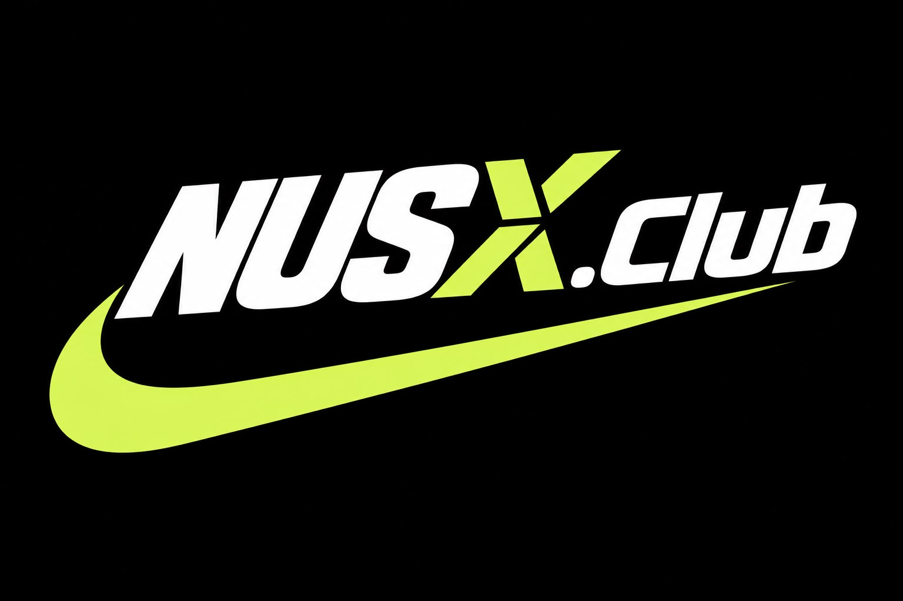

Find your people.
Meet students with different backgrounds, interests, and perspectives through shared experiences.

NUSX Club is a student group effort — a community open to tertiary students in Singapore and around the world.
The best connections start with a shared experience.
Every event planned, every initiative launched, every connection made is driven by students just like you. We create spaces where tertiary students can meet, collaborate, and make memories that last beyond graduation.
Whether you're studying in Singapore or joining us from across the globe, you're part of the story.
Meet students with different backgrounds, interests, and perspectives through shared experiences.
Student initiative is at the heart of every event and every connection. This community is a group effort.
One community brings together tertiary students from Singapore and around the world.